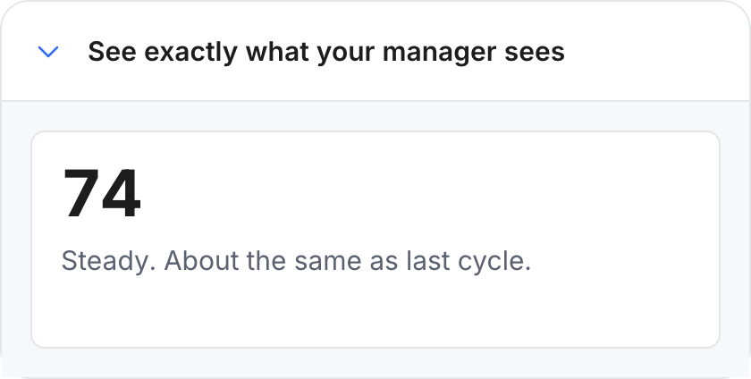
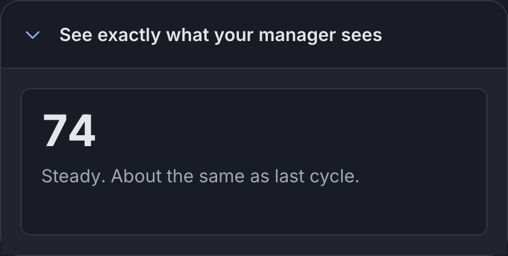

Organism
Proof disclosure
A closed row that says "see exactly what your owner sees", and opens to show it.
Anatomy
See exactly what your manager sees
That is the whole view. No names, no individual answers, no count while the cycle is open.
.wf-seethe disclosure, a native details element.wf-see > summarythe row that opens it, with a chevron in the action glyph role.wf-see[open] > summary::beforethe chevron rotated, the one rotation in the product.see-bodythe opened ground, recessed, holding the real components
Variants and sizes
State
Two: closed and open. Both are the component; neither is a variant of the other.
See exactly what your manager sees
closed
at rest
See exactly what your manager sees
open
after a press
The empty cells, and why they are empty
No emphasis axis. It is a promise being kept, not a call to action.
When to use it
Before an employee answers, and on the public page that explains the model. Four screens. It is the strongest single move the product makes on the strategic dimension: instead of telling the employee what the manager can see, it shows them the actual view.
The rule, and the anti rule
Do this. Show the real components inside it, not a picture of them. What is behind this row has to be the same Pulse card the operator gets, or the promise is a mock-up.
Not this, use Privacy strip instead. Do not use a disclosure to hide something long and ordinary. A person who has to open something to understand the screen is a screen that failed. This is for proof, not for tidying.
States
Native details, so keyboard behaviour comes free. The chevron does not animate under prefers-reduced-motion. Focus sits on the summary with the ring pulled inside the card radius.
One delta from the family. Each pair is the light theme on the left and the dark theme on the right, captured from the live component on this page, not drawn. They are re-taken by the check at step 9, which fails on a byte shift.


openThe named difference: the chevron rotates by 90 degrees, the only rotation in the product, and the recessed body appears holding the real Pulse card. Underprefers-reduced-motion the rotation is instantRe-take these with node scratchpad/states.js /tmp/jobs.json against a local server on port 8931.
Technical
| Level | 3, organism |
|---|---|
| File | design/system/components/disclosure.css |
| Roles it reads | --bg-recessed, --bg-surface, --color-focus, --glyph-action, --line-hairline |
| In the product | 4 of 99 screens |
| In colour | 1 screens: checkin-privacy |
Markup to copy
<details class="wf-see" style="max-width:460px"><summary>See exactly what your manager sees</summary><div class="see-body"><div class="wf-pulse"><div class="read">74</div><div class="interp">Steady. About the same as last cycle.</div></div><p class="wf-micro">That is the whole view. No names, no individual answers, no count while the cycle is open.</p></div></details>